Piezas Comunicativas
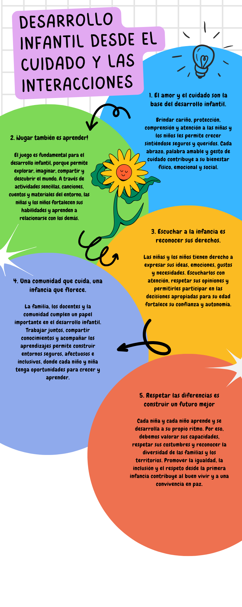
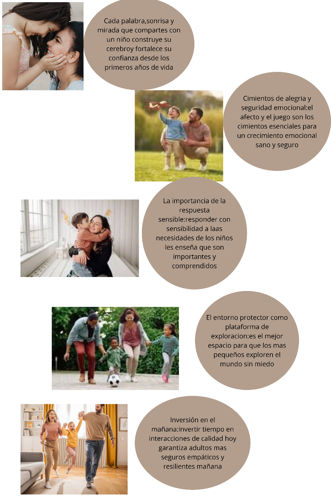
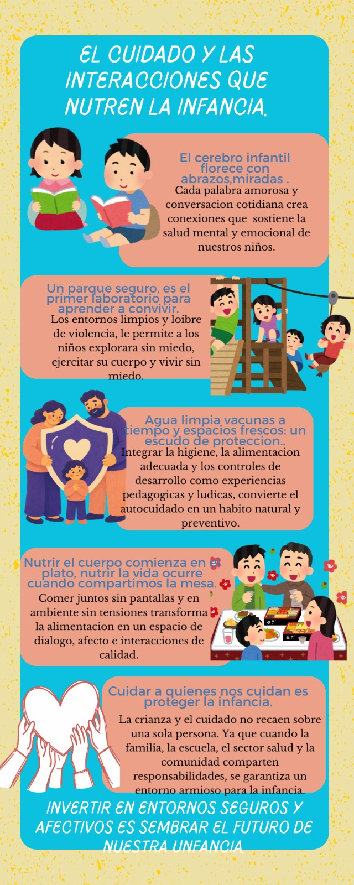
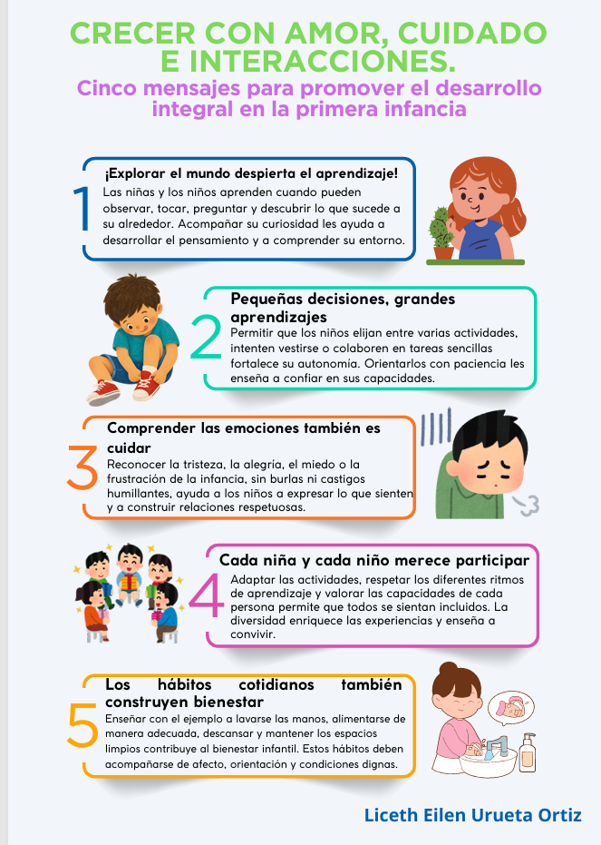
Acompañamiento a los ciclos de vida
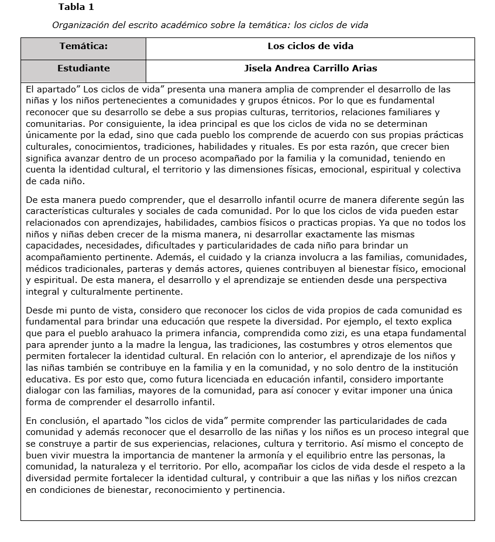
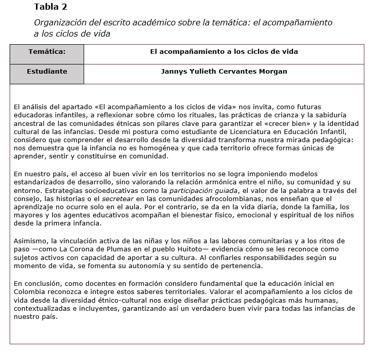
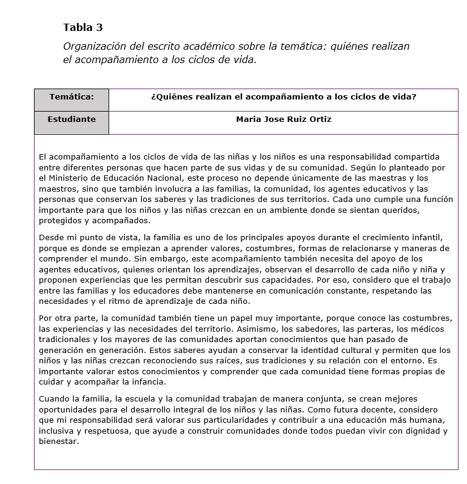
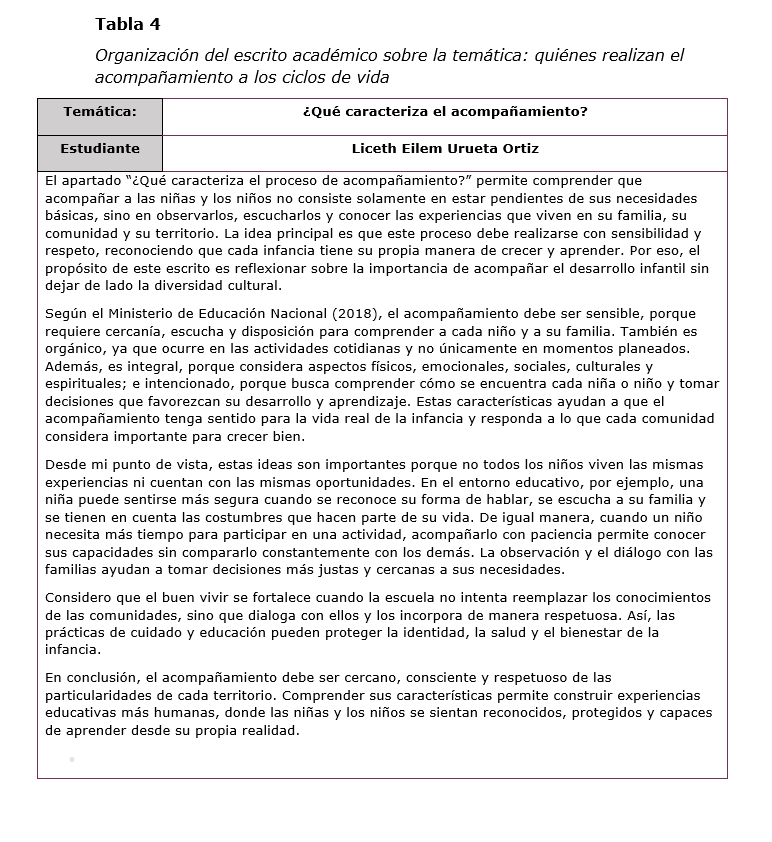
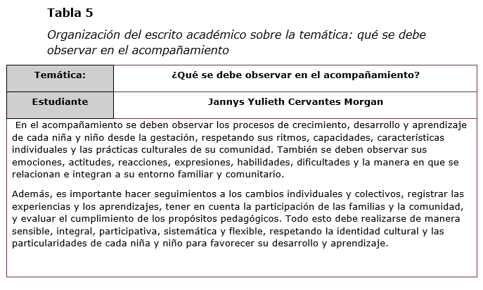
Continuación de la estructura del plan de promoción en salud y bienestar en el entorno educativo para la primera infancia
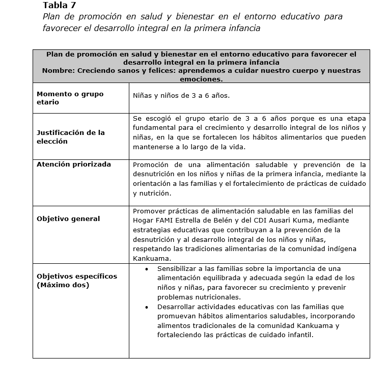
DIAGNÓSTICO TERRITORIAL - ATÁNQUEZ
Atánquez es un corregimiento ubicado en la Sierra Nevada de Santa Marta, perteneciente al municipio de Valledupar, en el departamento del Cesar. Este territorio forma parte del Resguardo Indígena Kankuamo y cuenta con una población aproximada de 6.000 habitantes. Es una comunidad reconocida por conservar sus raíces culturales, sus tradiciones y los conocimientos transmitidos de generación en generación. Su economía se basa principalmente en la agricultura, la ganadería, las actividades del campo y la elaboración artesanal de mochilas, las cuales representan una parte importante de la identidad del pueblo Kankuamo. Además, dispone de instituciones educativas y espacios de encuentro comunitario que contribuyen al desarrollo y aprendizaje de la población. En este territorio, las familias desempeñan un papel fundamental en la conservación de las costumbres y en la formación de los niños, niñas y jóvenes.
Diagnóstico Territorial.
El diagnóstico se realizó mediante una entrevista a una madre comunitaria del Hogar FAMI Estrella de Belén, perteneciente al Resguardo Indígena Kankuamo, en el corregimiento de Atánquez. La información corresponde a 15 personas vinculadas al hogar: cinco mujeres gestantes y diez niños y niñas lactantes, distribuidos en dos grupos de edad. Los datos presentados se basan en las respuestas proporcionadas por la entrevistada.
La indagación permitió conocer información relacionada con la asistencia a controles prenatales, la atención médica durante la gestación, la vacunación infantil, los controles de crecimiento y desarrollo, la lactancia materna, la alimentación complementaria y la suplementación con micronutrientes. La madre comunitaria brindó información general, pero no autorizó fotografías de los carnés de vacunación ni facilitó documentos individuales por razones de confidencialidad. Por esta razón, los porcentajes sobre vacunación y controles se presentan como información reportada en la entrevista y no como datos verificados mediante revisión documental. Los resultados corresponden exclusivamente a la población consultada y no representan necesariamente a todas las familias de Atánquez.
La información obtenida constituye un acercamiento a las condiciones de atención de este grupo y permite identificar fortalezas y aspectos que requieren mayor indagación. Entre ellos se encuentran la suplementación con micronutrientes, cuya cobertura no pudo establecerse con la información disponible, y la verificación documental de los servicios de salud infantil.
| Población atendida | Cantidad | Porcentaje sobre las 15 usuarias |
| Mujeres gestantes | 5 | 33,3 % |
| Lactantes de 0 a 6 meses | 6 | 40 % |
| Lactantes de 6 a 2 años | 4 | 26,7 % |
| TOTAL= | 15 | 100 % |
| DIAGNÓSTICO TERRITORIAL. | |||
Institución: Hogar FAMI Estrella de Belén Municipio: Valledupar, Cesar Fecha de recolección: 19 Oct Fuente de información: Método: Entrevista personal | ICBF HOGAR FAMI ESTRELLA DE BELÉN. | 15 usuarias Gestantes 5 Lactantes 6(0-6 meses) Lactantes 4 (6-2 años) Total= 10 lactantes | |
| DIMENSIÓN | INDICADORES ESPECÍFICOS | RESULTADO | ESTADO |
Salud Materna. | Gestantes que asisten a sus controles prenatales. | 5 de 5 (100 %) | Cumple |
Salud Materna | Atención médica y ginecológica durante la gestación. | 5 de 5 (100 %) | Cumple |
Salud infantil. | Esquema de vacunación de niños y niñas completo según la edad. | 10 de 10 (100 %) | Cumple |
Salud infantil | Controles de crecimiento y desarrollo al día según la edad. | 10 de 10 (100 %) | Cumple |
Nutrición Infantil. | Lactancia materna exclusiva hasta los 6 meses. | 6 de 6 (100 %) | Cumple |
Nutrición infantil. | Alimentación complementaria después de los 6 meses. | 4 de 4 (100 %) | Cumple |
| Nutrición infantil | Niños y niñas que reciben suplementación con micronutrientes | No se pudo determinar el número ni el porcentaje. La madre comunitaria indicó que no los suministra, pues considera que se destinan únicamente a niños con desnutrición. | Pendiente de verificación |
Análisis Territorial.
Salud materna
De acuerdo con la información recolectada mediante la entrevista personal, el Hogar FAMI Estrella de Belén atiende a cinco mujeres gestantes, de las cuales el 100 % de las gestantes consultadas asisten a sus controles prenatales y reciben atención médica y ginecológica durante el embarazo. Estos resultados reflejan una situación favorable en el seguimiento de la salud materna, ya que los controles prenatales permiten vigilar el desarrollo del embarazo, identificar posibles riesgos y brindar orientaciones para proteger el bienestar de la madre y del bebé.
Esta atención se relaciona con los propósitos del Instituto Colombiano de Bienestar Familiar (ICBF) de promover el cuidado integral durante la gestación y fortalecer las prácticas de cuidado familiar. No obstante, es importante continuar promoviendo la asistencia periódica a los controles, la alimentación saludable y el cumplimiento de las recomendaciones médicas. De esta manera, el hogar FAMI puede contribuir a que las mujeres gestantes reciban orientación oportuna y cuenten con mejores condiciones para el desarrollo saludable de sus bebés.
Salud infantil
El Hogar FAMI Estrella de Belén atiende a diez niños y niñas, de los cuales seis tienen entre 0 y 6 meses y cuatro se encuentran entre los 6 meses y los 2 años de edad. Según la información suministrada por la madre comunitaria, el 100 % cuentan con el esquema de vacunación completo de acuerdo con su edad y tienen al día los controles de crecimiento y desarrollo. No fue posible corroborar estos datos mediante la revisión de carnés o soportes, debido a que no se autorizó el acceso fotográfico a dichos documentos por razones de confidencialidad; por tanto, los porcentajes se presentan como datos reportados durante la entrevista.
Estos resultados representan una fortaleza en la atención de la salud infantil, ya que la vacunación contribuye a prevenir enfermedades, mientras que los controles periódicos permiten realizar seguimiento al crecimiento físico, identificar posibles alteraciones en el desarrollo y orientar oportunamente a las familias sobre el cuidado de sus hijos.
En relación con los objetivos de atención integral a la primera infancia, se recomienda que el Hogar FAMI continúe acompañando a las familias en el cumplimiento de los esquemas de vacunación y los controles de salud. La información reportada podría complementarse, si se cuenta con autorización, mediante registros consolidados y anonimizados, sin exponer datos personales de los niños y niñas.
3. Nutrición infantil
De acuerdo con la información obtenida mediante preguntas a la madre comunitaria del Hogar FAMI Estrella de Belén, los seis lactantes de 0 a 6 meses reciben lactancia materna exclusiva, mientras que los cuatro niños y niñas de 6 meses a 2 años reciben alimentación complementaria. Esto equivale al 100 % de cada grupo según lo informado por la entrevistada. En cuanto a la suplementación con micronutrientes, la madre comunitaria manifestó que no la suministra porque considera que está destinada únicamente a niños y niñas con desnutrición.
Durante la entrevista no se obtuvo información que permitiera verificar los criterios de indicación ni determinar cuántos niños reciben suplementación; por ello, no es posible calcular un porcentaje de cobertura. Este aspecto requiere contrastarse con las orientaciones vigentes del ICBF y del personal de salud responsable. La alimentación complementaria y la suplementación con micronutrientes son aspectos distintos y no deben confundirse.
4. Análisis general del diagnóstico.
En términos generales, los resultados obtenidos en el Hogar FAMI Estrella de Belén muestran, según el reporte de la madre comunitaria, condiciones favorables en las dimensiones de salud materna, salud y nutrición infantiles. De las 15 personas vinculadas al hogar, cinco son mujeres gestantes y diez corresponden a lactantes distribuidos en dos grupos de edad. La entrevistada informó cumplimiento de los indicadores consultados relacionados con controles prenatales, vacunación, controles de crecimiento y desarrollo, lactancia materna exclusiva y alimentación complementaria. No obstante, al no contar con registros documentales, estos resultados no pudieron verificarse de manera independiente. Además, no fue posible determinar la cobertura de suplementación con micronutrientes.
Estos resultados se relacionan con la importancia de la atención integral a la primera infancia, el acompañamiento a las familias y el fortalecimiento de las prácticas de cuidado. Es importante precisar que el diagnóstico corresponde únicamente a la población consultada en el Hogar FAMI Estrella de Belén y no permite generalizar los resultados a toda la población de Atánquez o de Valledupar. Las limitaciones de acceso a documentos se deben a la protección de la confidencialidad de los menores.
DIAGNÓSTICO EDUCATIVO.
El diagnóstico realizado en el Centro de Desarrollo Infantil (CDI) Ausari Kuma, ubicado en el corregimiento de Atánquez, municipio de Valledupar, Cesar, permitió recopilar, mediante una entrevista a la coordinadora, información general sobre las condiciones de salud, alimentación, nutrición y acceso a los servicios de atención de los 100 niños y niñas atendidos. La coordinadora indicó que, por tratarse de información sensible, no era posible proporcionar detalles individualizados. Por ello, los resultados se presentan como información reportada por la institución y no como una verificación de expedientes individuales.
Limitación de la información: las personas entrevistadas brindaron respuestas generales y no autorizaron el acceso a detalles individuales por tratarse de datos sensibles. En consecuencia, el diagnóstico no incluye nombres, historias clínicas ni soportes personales; los porcentajes se presentan como datos reportados y las necesidades de verificación se señalan expresamente.
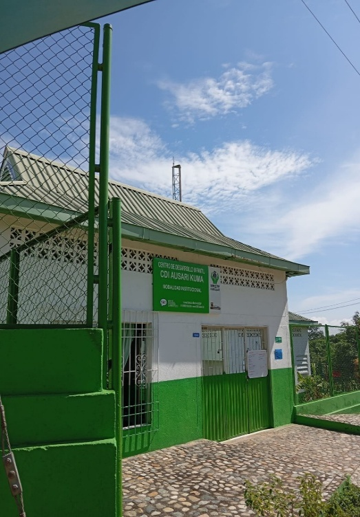
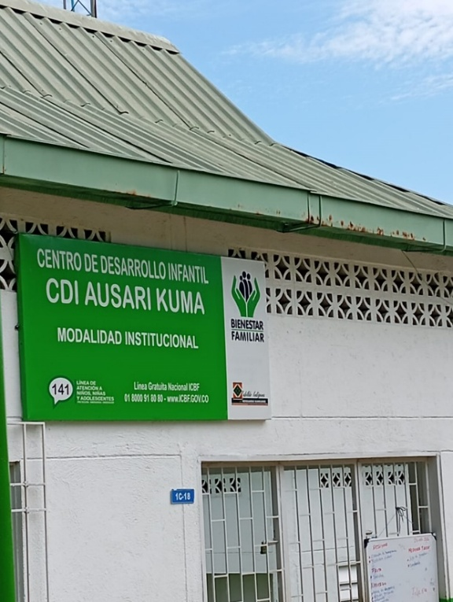
| DIAGNÓSTICO EDUCATIVO. | ||||
| Institución: CDI Ausari Kuma Municipio: Valledupar, Cesar Corregimiento: Atánquez Fecha de recolección: 20 Oct Fuente de información: Coordinadora del instituto Mirian García Pacheco Método: Entrevista personal | CDI AUSARI KUMA Centro de desarrollo infantil | 100 niños | ||
| Área de valoración | OBSERVACIONES | RESULTADO | ||
| Salud infantil | ||||
| Niños y niñas atendidos | El CDI Ausari Kuma brinda atención integral a 100 niños y niñas, promoviendo su bienestar y desarrollo durante la primera infancia | 100 niños y niñas atendidos. | ||
| Seguimiento a controles de crecimiento y desarrollo | Según la coordinadora, la institución realiza seguimiento para vigilar el crecimiento y detectar posibles alteraciones oportunamente. | Se reporta seguimiento | ||
| Controles de crecimiento y desarrollo al día | La coordinadora manifiesta que todos los niños y niñas tienen sus controles al día, lo que favorece la identificación temprana de riesgos y el seguimiento de su estado de salud. | 100 % | ||
| Asistencia a controles de crecimiento y desarrollo | La coordinadora aclaró que su respuesta se refería a la asistencia: según lo informado, los niños y niñas asisten a sus controles. | 100 % de asistencia reportada | ||
| Esquema de vacunación completo-Incompleto | El CDI realiza seguimiento al estado de vacunación de los niños y niñas. Cuando se identifica que alguno no ha recibido las vacunas correspondientes, se efectúa el seguimiento y, cuando es necesario, se gestiona la reprogramación de la atención. | 100 % | ||
| Vacunas recibidas en los últimos seis meses | La persona encargada de salud y nutrición realiza seguimiento y monitoreo interno para verificar que los niños y niñas cuenten con sus vacunas correspondientes a la edad y facilitar la gestión de las dosis pendientes. | 100 % | ||
| Alimentación y nutrición | ||||
| Consumo diario de frutas y verduras | Los niños y niñas consumen frutas y verduras diariamente, favoreciendo el aporte de vitaminas, minerales y fibra necesarios para su desarrollo. | 100 % | ||
| Dificultades de acceso a una alimentación adecuada | La coordinadora informó que el CDI aporta el 70 % de la alimentación y las familias aportan el 30 % restante. La información corresponde a lo expresado en la entrevista; no se contó con un cálculo nutricional independiente. | 70 % CDI / 30 % familias (según entrevista) | ||
| Valoración nutricional en los últimos seis meses | Se realiza seguimiento nutricional cada tres meses, de manera articulada entre el componente de salud y nutrición y las actividades del CDI. Estas valoraciones permiten observar la evolución del crecimiento, identificar posibles riesgos nutricionales y establecer acciones de acompañamiento oportunas. | 100 % | ||
| Riesgo de desnutrición o alteraciones nutricionales | La coordinadora reportó seis niños y niñas con desnutrición. Por la confidencialidad de la información no se obtuvo detalle individual sobre clasificación, evolución o seguimiento de cada caso. Se identifica la necesidad de seguimiento nutricional individual y articulación con las familias y los servicios de salud, sin atribuir causas a partir de la información disponible. | 6 de 100 (6 %), según la coordinadora. Requiere seguimiento. | ||
| Acceso y seguimiento en salud | ||||
| Seguimiento a la vacunación infantil | El CDI verifica los esquemas de vacunación y acompaña la gestión de las dosis pendientes, cuando corresponde. | 100 % | ||
| Dificultades para acceder a los servicios de vacunación | Se identifica un caso relacionado con barreras culturales en una familia de la etnia arahuaca. Se brindó orientación y acompañamiento para favorecer el acceso a la vacunación. | 1 caso reportado — Requiere seguimiento diferencial. Esto corresponde al 1 % de todos los niños. |
Análisis Educativo.
1. Análisis salud infantil.
En la dimensión de salud infantil del CDI Ausari Kuma, la coordinadora informó que los 100 niños y niñas atendidos cuentan con el esquema de vacunación completo de acuerdo con su edad y asisten a sus controles de crecimiento y desarrollo. Esto corresponde al 100 % de la población atendida según la información proporcionada en la entrevista. Debido a las limitaciones de acceso a registros individuales por razones de confidencialidad, no fue posible verificar documentalmente cada caso.
La información reportada constituye una fortaleza para la atención integral a la primera infancia, pues la vacunación contribuye a prevenir enfermedades y los controles de crecimiento y desarrollo permiten hacer seguimiento a la evolución infantil e identificar posibles alteraciones. Se recomienda mantener estos procesos y, cuando sea posible, respaldar los datos agregados mediante registros institucionales anonimizados y autorizados.
2. Análisis alimentación y nutrición
En la dimensión de alimentación y nutrición del CDI Ausari Kuma, la coordinadora informó que la institución aporta el 70 % de la alimentación y las familias el 30 % restante. Esta distribución se registra como información proporcionada durante la entrevista; no se contó con documentación que permitiera establecer cómo se calculó o verificarla mediante una evaluación nutricional independiente. Por sí sola, esta distribución no permite concluir que el aporte familiar sea la causa de los casos de desnutrición identificados.
La participación de la institución y de las familias en la alimentación infantil debe analizarse desde la corresponsabilidad y el derecho de los niños y niñas a una alimentación adecuada. El dato informado no sustituye la valoración individual del estado nutricional ni permite atribuir responsabilidades sobre los casos reportados. Se recomienda fortalecer la comunicación con las familias y la articulación con los servicios de salud, respetando la confidencialidad de la información.
3. Acceso y seguimiento en salud.
La información recopilada en el CDI identifica un caso reportado de barrera cultural relacionado con la vacunación de una familia perteneciente al pueblo arhuaco. Según lo informado, se brindó orientación y acompañamiento para favorecer el acceso al servicio. El caso corresponde al 1 % de los 100 niños y niñas atendidos, tomando como referencia la población reportada por la coordinadora. Debido a que no se obtuvo información individual adicional, no es posible detallar circunstancias particulares; se destaca la importancia de mantener una comunicación respetuosa y culturalmente pertinente.
Se recomienda continuar el diálogo con la familia, escuchar sus inquietudes y, cuando sea pertinente, articular las acciones con los servicios de salud y los referentes comunitarios. El propósito debe ser facilitar el acceso a la vacunación mediante un acompañamiento respetuoso de las particularidades culturales, sin estigmatizar a la familia.
4. Análisis general
Los resultados del CDI Ausari Kuma evidencian, según la información suministrada por la coordinadora, fortalezas en el seguimiento de los controles de crecimiento y desarrollo, la vacunación, la provisión de alimentos y la realización de valoraciones nutricionales. Los datos deben interpretarse teniendo en cuenta que se obtuvieron mediante entrevista y que no fue posible acceder a información individual por razones de confidencialidad.
Se identifican dos aspectos prioritarios. El primero corresponde a los seis niños y niñas con desnutrición reportados por la coordinadora, equivalentes al 6 % de la población atendida. La información disponible no permite precisar la clasificación, evolución ni las acciones individuales de seguimiento, por lo que se recomienda fortalecer la articulación entre CDI, familias y servicios de salud. El segundo aspecto se relaciona con el caso reportado de barrera cultural frente a la vacunación, que requiere mantener el acompañamiento intercultural y favorecer el acceso efectivo al servicio. La distribución alimentaria 70 % institución y 30 % familias se conserva como dato reportado, sin atribuirle causalidad directa sobre la desnutrición.